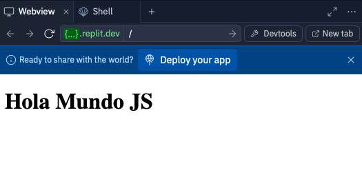

Práctica: Investigación de JavaScript
Resumen
En esta practica/investigación se empezó a revisar el uso de JavaScript, mismo que fucionan para paginas web y dan ciertas interacciones.
Herramientas
- replit.com
- Investigacionas por internet
Desarrollo
Objetivo General
Obtener conocimientos basicos de JavaScript y php.
JavaScript
En esta sección se encuentra toda la información sobre JavaScript
¿Qué hace la etiqueta input de HTML y cómo se utilizan?
La etiqueta <input> se utiliza en HTML para crear controles interactivos en un formulario web que permiten al usuario ingresar datos. Estos controles pueden ser de varios tipos, como texto, contraseñas, botones de radio, casillas de verificación, entre otros.
Desarrolla en tu página web un ejemplo de un formulario utilizando la etiqueta input.
Un formulario utilizando etiquetas inputs quedaría de la siguiente manera: Click aqui.
El codigo de ese formulario es el siguiente:
<!DOCTYPE html>
<html lang="es">
<head>
<meta charset="UTF-8">
<meta name="viewport" content="width=device-width, initial-scale=1.0">
<title>Formulario de Ejemplo</title>
</head>
<body>
<h1>Formulario de Ejemplo</h1>
<form action="/submit" method="post">
<label for="name">Nombre:</label>
<input type="text" id="name" name="name" required><br><br>
<label for="email">Correo Electrónico:</label>
<input type="email" id="email" name="email" required><br><br>
<label for="password">Contraseña:</label>
<input type="password" id="password" name="password" required><br><br>
<label for="dob">Fecha de Nacimiento:</label>
<input type="date" id="dob" name="dob"><br><br>
<label for="color">Color Favorito:</label>
<input type="color" id="color" name="color"><br><br>
<label for="file">Subir Archivo:</label>
<input type="file" id="file" name="file"><br><br>
<label for="website">Página Web:</label>
<input type="url" id="website" name="website"><br><br>
<label>Género:</label><br>
<input type="radio" id="male" name="gender" value="male">
<label for="male">Masculino</label><br>
<input type="radio" id="female" name="gender" value="female">
<label for="female">Femenino</label><br>
<label>Hobbies:</label><br>
<input type="checkbox" id="hobby1" name="hobby" value="reading">
<label for="hobby1">Leer</label><br>
<input type="checkbox" id="hobby2" name="hobby" value="traveling">
<label for="hobby2">Viajar</label><br>
<input type="submit" value="Enviar">
</form>
</body>
</html>
Desarrolla en tu página web un muestrario de al menos 10 tipos de inputs diferentes.
Para ver la pagina de este muestrario, dar click aqui.
<!DOCTYPE html>
<html lang="es">
<head>
<meta charset="UTF-8">
<meta name="viewport" content="width=device-width, initial-scale=1.0">
<title>Muestrario de Inputs</title>
</head>
<body>
<h1>Muestrario de Inputs</h1>
<form>
<label for="text">Texto:</label>
<input type="text" id="text" name="text"><br><br>
<label for="password">Contraseña:</label>
<input type="password" id="password" name="password"><br><br>
<label for="email">Correo Electrónico:</label>
<input type="email" id="email" name="email"><br><br>
<label for="number">Número:</label>
<input type="number" id="number" name="number"><br><br>
<label for="tel">Teléfono:</label>
<input type="tel" id="tel" name="tel"><br><br>
<label for="range">Rango:</label>
<input type="range" id="range" name="range"><br><br>
<label for="url">URL:</label>
<input type="url" id="url" name="url"><br><br>
<label for="color">Color:</label>
<input type="color" id="color" name="color"><br><br>
<label for="date">Fecha:</label>
<input type="date" id="date" name="date"><br><br>
<label for="datetime-local">Fecha y Hora:</label>
<input type="datetime-local" id="datetime-local" name="datetime-local"><br><br>
</form>
</body>
</html>
¿Qué es el lenguaje JavaScript?
JavaScript (JS) es un lenguaje de programación interpretado que se utiliza principalmente para crear contenido web interactivo.
¿Para qué sirve el lenguaje JS?
JavaScript se utiliza para manipular el DOM, validar formularios, crear animaciones, y realizar solicitudes de red en segundo plano (AJAX) para actualizar partes de la página sin recargarla completamente.
¿A qué se refiere el DOM (Document Object Model) en el desarrollo Web?
El DOM (Document Object Model) es una interfaz de programación que representa el documento HTML o XML como una estructura de árbol, donde cada nodo es un objeto que representa una parte del documento. Esto permite a los lenguajes de programación como JavaScript acceder y manipular el contenido, la estructura y el estilo del documento de manera dinámica.
¿Cuál es la diferencia entre los archivos HTML, CSS y JS?
HTML (HyperText Markup Language) define la estructura y el contenido de la página web. CSS (Cascading Style Sheets) controla la presentación y el diseño visual de la página web. JS (JavaScript) agrega interactividad y comportamiento dinámico a la página web.
¿Para qué sirve la etiqueta <script>?
La etiqueta <script> se utiliza en HTML para incluir y ejecutar código JavaScript. Puede estar dentro del documento HTML o enlazarse a un archivo externo.
¿En qué consisten los 3 métodos para cambiar elementos tipo Tag Name, ID y Class Name con JS?
1. Por Tag Name: document.getElementsByTagName('tagname')
2. Por ID: document.getElementById('id')
3. Por Class Name: document.getElementsByClassName('classname')
Elabora en Replit un programa básico “Hola mundo” con JS, describe el funcionamiento y elementos utilizados.
El link hacía el replit, se encuentra aqui.
A continuación se presentan los codigos:
<!DOCTYPE html>
<html lang="es">
<head>
<title>Hola Mundo</title>
</head>
<body>
<h1 id="test">Hola mundo</h1>
<script src="script.js"></script>
</body>
</html>
El archivo HTML contiene una estructura básica con un elemento <h1> que tiene el id "greeting" y una etiqueta <script> que enlaza un archivo JavaScript externo llamado "script.js".
El archivo JavaScript ("script.js") contiene el siguiente código:
document.getElementById('test').innerText = 'Hola Mundo JS';
Este código JavaScript selecciona el elemento con el id "test" y cambia su texto a "Hola mundo JS".
¿Cuál es la sintaxis de la programación en JS?
La sintaxis de JavaScript incluye la declaración de variables, funciones, condicionales, bucles y otros elementos. Aquí algunos ejemplos:
// Declaración de variables
var variable1;
let variable2;
const variable3 = 'valor';
// Declaración de funciones
function miFuncion() {
// código de la función
}
// Llamada a funciones
miFuncion();
¿Cómo se declaran variables en JS?
Las variables en JavaScript se pueden declarar usando var, let y const:
var variable1;
let variable2;
const variable3 = 'valor';
¿Cómo se declaran funciones en JS?
Las funciones en JavaScript se declaran utilizando la palabra clave function seguida del nombre de la función y paréntesis:
function miFuncion() {
// código de la función
}
¿Cómo se llaman funciones en JS?
Las funciones en JavaScript se llaman utilizando el nombre de la función seguido de paréntesis:
miFuncion();
¿Cómo declaras una función interna de un HTML con JS y cómo declaras un documento externo con JS?
Para declarar una función interna en HTML, puedes usar una etiqueta <script> dentro del documento HTML:
<!DOCTYPE html>
<html lang="es">
<head>
<meta charset="UTF-8">
<meta name="viewport" content="width=device-width, initial-scale=1.0">
<title>Función Interna</title>
</head>
<body>
<button onclick="saludar()">Saludar</button>
<script>
function saludar() {
alert('¡Hola desde una función interna!');
}
</script>
</body>
</html>
Para declarar una función en un archivo externo, puedes enlazar el archivo JavaScript usando la etiqueta <script> con el atributo src:
<!DOCTYPE html>
<html lang="es">
<head>
<meta charset="UTF-8">
<meta name="viewport" content="width=device-width, initial-scale=1.0">
<title>Función Externa</title>
</head>
<body>
<button onclick="saludar()">Saludar</button>
<script src="funcion.js"></script>
</body>
</html>
Y el archivo JavaScript ("funcion.js") tendría el siguiente código:
function saludar() {
alert('¡Hola desde una función externa!');
}
¿Cuáles ciclos de programación están disponibles en JS?
Los ciclos de programación disponibles en JavaScript son:
// Ciclo for
for (let i = 0; i < 10; i++) {
console.log(i);
}
// Ciclo while
let i = 0;
while (i < 10) {
console.log(i);
i++;
}
// Ciclo do...while
let j = 0;
do {
console.log(j);
j++;
} while (j < 10);
¿Cuáles funciones de condicional están disponibles en JS?
Las funciones condicionales disponibles en JavaScript son:
// Condicional if
if (condicion) {
// código si la condición es verdadera
} else {
// código si la condición es falsa
}
// Condicional else if
if (condicion1) {
// código si la condición1 es verdadera
} else if (condicion2) {
// código si la condición2 es verdadera
} else {
// código si ninguna condición es verdadera
}
// Condicional switch
switch (expresion) {
case valor1:
// código si la expresión es igual a valor1
break;
case valor2:
// código si la expresión es igual a valor2
break;
default:
// código si la expresión no coincide con ningún valor
}
Conclusiones
El uso de JavaScript es bastante usado hoy en día y provee una cantidad de herramientas que son útiles para la creación de sitios web.
Referencias
No hay referencias
Descargables
No hay descargables